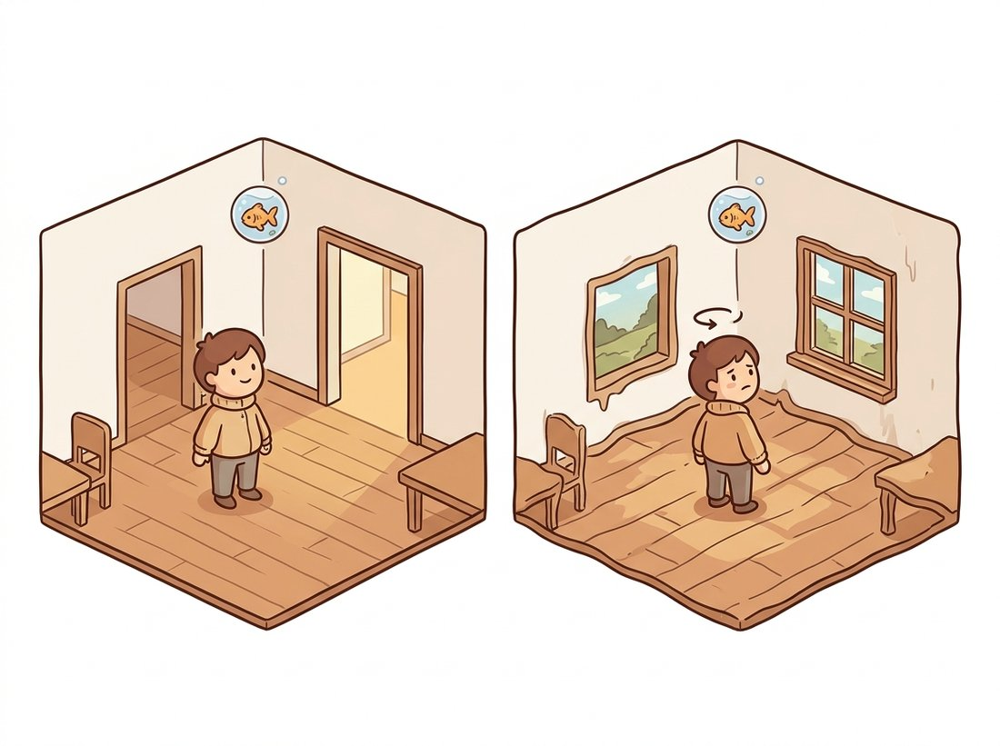

"Press W and I render a step forward. Turn the wheel and I render the road bending to meet you. I am not playing the game. I am the game, dreamed twenty times a second, and I have never seen a line of its source code."
A Diffusion Model Moonlighting as a Game Engine
A generative world simulator is a video model with a steering wheel: it generates the next frame conditioned not only on the past but on an action, so a user or a policy can act inside the generated world and watch the consequences unfold in pixels. Scaling the latent dynamics of Section 36.5 with the video-generation power of Sections 36.1 and 36.2 produces driving simulators like GAIA-1 and playable neural game engines like GameNGen. This section is about the one architectural ingredient that makes a video model interactive: action conditioning.
The RSSM of Section 36.5 was a compact latent simulator, excellent for control but visually modest. The video models of Section 36.2 were visually spectacular but passive: you prompt them once and watch. A generative world simulator fuses the two. It keeps the rich generative backbone of a video model but conditions each generated step on an action, the way the RSSM's transition $h_t = f(h_{t-1}, z_{t-1}, a_{t-1})$ folded in the action $a_{t-1}$. The result is a world you can drive, play, or let an agent inhabit, generated frame by frame.
1. Action Conditioning: The One New Ingredient Intermediate
Recall the conditioning toolkit from Chapter 34 and Chapter 35: a generative model can be steered by injecting a conditioning embedding through cross-attention or by concatenating it to the input. A world simulator uses exactly this machinery, but the conditioning signal is an action, a steering angle, a key press, a robot command, embedded and fed into the denoiser alongside the past frames. The model learns the joint distribution of next-frame-given-past-frames-and-action, so changing the action changes the generated future. This is the same controllability philosophy of Chapter 35 pushed into the temporal, interactive regime: instead of editing a static image, you edit the future.
The generation is necessarily autoregressive over time, the rolling-window scheme foreshadowed in Section 36.2. At each step the model conditions on a context window of recent frames plus the current action and generates the next frame (or a short chunk), then the window slides forward. This is what makes interaction possible: the action for the next step is not known in advance, it arrives from the user or policy in real time, so the model cannot generate the whole clip at once.
Figure 36.6.1 shows the loop. The code below sketches the inference side of an action-conditioned simulator, the part that turns a trained video model into something you can drive.
# Inference loop of an action-conditioned world simulator: a rolling latent
# context window plus an embedded action drive a trained next-frame model, one
# decoded frame at a time, so the live action is what makes the video interactive.
import torch
from collections import deque
class WorldSimulator:
"""Autoregressive action-conditioned frame generator (inference loop).
Wraps a trained next-frame model into an interactive simulator."""
def __init__(self, model, vae, context_len=8):
self.model, self.vae = model, vae
self.context = deque(maxlen=context_len) # rolling window of latent frames
def reset(self, init_frame):
self.context.clear()
self.context.append(self.vae.encode(init_frame))
@torch.no_grad()
def step(self, action):
"""Generate the next frame conditioned on the context and this action."""
ctx = torch.stack(list(self.context)) # (T, C, h, w) latents
action_emb = self.model.embed_action(action) # action -> conditioning vector
next_latent = self.model.sample_next(ctx, action_emb) # denoise one new latent
self.context.append(next_latent) # slide the window forward
return self.vae.decode(next_latent) # latent -> displayed frame
# Interactive use: each call to step() advances the dreamed world by one frame
# in response to a live action, e.g. a key press or a policy's command.
# sim.reset(start_image); frame = sim.step("turn_left")step, a rolling latent context window plus an embedded action drive model.sample_next, and the decoded frame is shown before the next action arrives. The action argument to step is the single line that makes a video model interactive.2. GAIA-1: A World Model for Driving Intermediate
GAIA-1 (Hu et al., Wayve, 2023) is the flagship case study. It is a 9-billion-parameter world model for autonomous driving that generates realistic driving video conditioned on past video, text descriptions, and ego-vehicle actions (the ego-vehicle is the camera-carrying car itself, the agent whose steering and speed the model is conditioned on). Architecturally it follows a tokenize-then-predict recipe: an image tokenizer (a discrete autoencoder in the VQ-VAE lineage of Chapter 31) turns frames into token sequences, an autoregressive transformer (the world model proper) predicts the next tokens conditioned on action and text, and a video diffusion decoder (the machinery of Section 36.1) renders the predicted tokens into high-fidelity video.
What makes GAIA-1 a world model rather than a video generator is that you can intervene on the action and the future changes coherently: prompt it to "turn left" or "the car ahead brakes" and it generates a plausible continuation respecting that action. This is enormously valuable for autonomous driving because it lets engineers generate rare, dangerous scenarios (a pedestrian darting out, a sudden swerve) on demand, in realistic video, to test and train perception and planning stacks without staging them on real roads. It is the same training-in-imagination payoff as Dreamer (Section 36.5), now in photorealistic pixels rather than a compact latent.
3. Playable Neural Game Engines Advanced
The most vivid demonstration that a generative model can be a simulator is GameNGen (Valevski et al., 2024), a diffusion model trained to simulate the classic game DOOM at about 20 frames per second on a single accelerator, conditioned on player actions. There is no game engine running underneath: the diffusion model alone, given the recent frames and the current key presses, generates the next frame, including the right enemies, the right ammo count, the right damage, all learned from watching an agent play. A human can pick up the controller and play a game that exists only as weights.
Genie (Bruce et al., DeepMind, 2024) generalizes this in a striking way: it learns a world model from unlabeled internet videos of 2D platformer games, with no action labels at all, by inferring a latent action space, a small set of discrete actions the model discovers explains the frame-to-frame transitions in the training videos. At inference a user steers the generated environment with those learned latent actions. This is the self-supervised dream of Chapter 25 applied to interactivity: learn controllable dynamics from passive observation alone.
The conceptual leap of this section is small but profound: the only structural difference between a passive video generator and an interactive world simulator is what the model conditions on. Condition each step on a text prompt and you have text-to-video; condition each step on the past plus a live action and you have a simulator. Everything else, the VAE, the denoiser, the autoregressive rollout, is shared. This is why the field treats large video models and world models as points on one spectrum, and why progress in one immediately advances the other. A simulator is a generator that took feedback.
Building the tokenizer, the autoregressive transformer, and the diffusion decoder of a GAIA-style stack from scratch is a multi-thousand-line research effort. The DIAMOND world model (Alonso et al., 2024), which trains an agent inside a diffusion world model, ships a reference implementation that wires action conditioning into a diffusion denoiser:
# DIAMOND: a diffusion-based world model with action conditioning.
# git clone https://github.com/eloialonso/diamond ; then its config drives:
# - a diffusion denoiser that takes (past_frames, action) -> next_frame
# - an autoregressive interactive loop identical in spirit to WorldSimulator above
# Run the provided trained Atari / CSGO world models to play inside the dream
# via the repo's play script (see its README for the current command and flags).This packages the action-conditioning, the diffusion rollout, and the interactive play loop, the exact components sketched by hand above, into a runnable system with pretrained world models you can step through live, so you can experience a playable neural simulator without training one.
You now have the whole interactive loop: the WorldSimulator class above, action conditioning, and a pretrained DIAMOND world model from the Right Tool callout. Wire them into a real-time play harness. Capture arrow-key presses, embed each as the action passed to step, display the decoded frame in a window, and feed the live keypress back as the next action, closing the autoregressive loop of Figure 36.6.1. The payoff is visceral: a game with no game engine underneath, just weights you can pilot. This is a different build from the latent-control lab in Section 36.8, which trains a policy in imagination; here a human is the controller and the deliverable is a playable demo, the kind of project that makes a striking interview talking point about generative world simulators.
An autonomous-driving team needed to validate that their emergency-braking system handled a child running into the road from between parked cars, a scenario they could never ethically or safely stage, and which appeared in almost none of their real logged miles. Their first approach, scripting it in a hand-built simulator, produced footage their perception model instantly recognized as synthetic and handled unrealistically well. They switched to a GAIA-style action-conditioned world model trained on their real driving logs: prompting it with the rare scenario produced photorealistic video, statistically close to their real camera distribution, of exactly the dangerous moment, generated under many lighting and street conditions and with the ego-vehicle's braking action varied. The perception stack's failures on this generated data transferred to a real closed-course test. The lesson the safety lead reported: a world model trained on real data is a controllable distribution over realistic futures, which is precisely the tool for manufacturing the rare, dangerous, or unstageable situations that real data never gives you enough of. This use, generative models as data engines, is the bridge to Chapter 37.
4. The Catch: Drift, Memory, and Honesty Intermediate
Autoregressive world simulators inherit a hard problem from their structure: drift. Because each frame is generated from the model's own previous outputs, small errors compound, and over a long interaction the simulated world can degrade, hallucinate, or forget what is behind the camera. GameNGen and GAIA-1 both invest heavily in fighting drift, through noise augmentation of the context and through limited but real memory. Noise augmentation works like this: during training, the past frames the model conditions on are deliberately corrupted with noise, so the model practices recovering from imperfect context. It then corrects its own errors at inference instead of compounding them. The deeper issue is consistency over long horizons and across occlusions: a world simulator that lets you turn around should show you the same room you saw before, which requires a persistent world state the autoregressive frame buffer only approximates. This is the same identity-drift and object-permanence problem from Section 36.1, now load-bearing because the user can probe it interactively. The illustration below dramatizes it: look away from a doorway and it may quietly become a window by the time you look back.

A neural game engine has the memory of a goldfish with excellent eyesight. Turn left, admire a doorway, turn right, turn back, and the doorway may have quietly become a window, because the model is reconstructing the world from the last few frames rather than remembering it. Players of these early simulators report a specific uncanny dread: the world is gorgeous as long as you keep looking at it and starts negotiating with reality the moment you look away. Object permanence, the thing a human infant masters around eight months, is still an active research frontier for a billion-parameter dream engine.
Whether these simulators have learned genuine world structure or merely a convincing surface is exactly the question that Section 36.7 sidesteps by predicting in representation space, and that Section 36.8 confronts by building evaluations for physical consistency, controllability, and coherence. A simulator you can drive is only as trustworthy as the futures it refuses to hallucinate.
The frontier here is the hottest in generative vision. Genie 2 (DeepMind, 2024) extended the learned-action interactive-environment idea to 3D, generating playable 3D worlds from a single image; Genie 3 (DeepMind, 2025) pushed this to real-time interaction, generating navigable worlds at 720p and 24 frames per second that stay consistent for a few minutes, a sharp jump over Genie 2's roughly 10-to-20-second horizon. GameNGen and the wave of neural-game-engine follow-ups (Oasis, an open Minecraft world model, 2024) push real-time playable generation toward open-ended games. GAIA-2 (Wayve, 2025; arXiv:2503.20523), a controllable multi-camera latent-diffusion driving world model, scales multi-agent, action-controllable driving simulation across geographically diverse environments. Two technical themes cut across them: explicit memory and persistent state to fight drift (giving the autoregressive loop something the RSSM had, a maintained latent), and the merger with the 3D and 4D generation of Section 36.4 so the world is geometrically consistent when you move through it. The unifying ambition, stated openly by several labs, is a general, controllable, persistent simulator of reality, which is precisely why the evaluation question of the next sections has become urgent rather than academic.
5. Case Studies in Generative World Simulators Intermediate
The systems sketched above were chosen for vividness; here we treat the most influential generative world simulators as proper case studies. The organizing question, the one the syllabus poses for this whole module, is blunt: is scaled video generation a path to general world simulators? Each system below is one lab's bet on that question. For each we name the core mechanism (architecture, conditioning, training signal), what it demonstrates, and the precise reference. Read them as data points on a single axis: how much genuine, controllable, persistent world structure emerges when you scale a generative video model and give it an action input. We group the bets into two architectural families that recur throughout: token-autoregressive world models that predict discrete next-frame tokens with a transformer, and diffusion world models that denoise the next frame directly. A third hybrid family tokenizes for prediction and then diffuses for rendering.
Every system in this section is one of two things wearing different clothes. A token-autoregressive world model (GAIA-1's transformer, Genie's dynamics model) discretizes each frame into tokens with a VQ-style tokenizer (Chapter 31), then predicts the next frame's tokens one or many at a time with a transformer, exactly the next-token objective of a language model applied to video. A diffusion world model (UniSim, DIAMOND, Sora, the diffusion half of Cosmos) keeps the frame in a continuous latent and learns to denoise the next frame conditioned on the past and the action. The central design tension, argued explicitly by DIAMOND, is whether the tokenizer's discretization throws away visual detail that an agent or a downstream evaluation actually needs. Keep this fork in mind as the through-line of the case studies.
GAIA-1: tokenize, predict, diffuse for driving
GAIA-1 (Hu et al., Wayve, 2023; arXiv:2309.17080), introduced in Section 2 above, is worth restating precisely as a case study because its two-stage design is the canonical hybrid. Stage one is the world model: an autoregressive transformer performing next-token prediction over a single unified discrete sequence that interleaves video tokens, text tokens, and action tokens. Images are VQ-tokenized into the discrete vocabulary, text is tokenized conventionally, and ego-actions (steering, speed) are quantized into the same sequence, so the transformer learns the joint distribution of the next token whatever its modality. Stage two is a video-diffusion decoder that maps the predicted tokens back into high-resolution video, recovering the visual detail the tokenizer compressed away. The training signal is autoregressive next-token cross-entropy for the world model and a denoising objective for the decoder. What GAIA-1 demonstrates: scaling this recipe to 9B parameters produces emergent scene dynamics and 3D geometry (other vehicles move plausibly, the road recedes correctly), fine-grained ego-control (intervene on the action and the future bends to obey), and on-demand counterfactual scenarios, the rare and dangerous events a driving stack must be validated against but can rarely log.
Genie: controllability with no action labels
The systems above all assume you have action labels to condition on. But the largest video corpus on Earth, internet gameplay footage, comes with no action labels: you see the screen, never the controller. How do you learn a controllable simulator from video alone? Genie (Bruce et al., DeepMind, 2024; arXiv:2402.15391, ICML 2024 Best Paper) answers with three components. First, a Latent Action Model (LAM) learns a small set of discrete latent actions fully unsupervised, by an inverse-dynamics objective: given two consecutive frames, infer the latent action that explains the transition, trained so that conditioning the future on that latent reconstructs the next frame. This is the key novelty, controllability with zero action labels, and it is exactly the self-supervised inverse-dynamics idea pushed to its limit. Second, an ST-transformer spatiotemporal tokenizer compresses frames into tokens efficiently across both space and time. Third, a MaskGIT-style autoregressive dynamics model predicts the next frame's tokens given past tokens plus the inferred latent action. At 11B parameters, trained on unlabeled internet gameplay video, Genie lets a user steer a generated 2D world with the discovered latent actions. What it demonstrates: a controllable world model can be distilled from passive, unlabeled video at scale, the controllability emerging rather than supervised. The lineage continued in product previews (treated as company reports below): Genie 2 (DeepMind blog, 2024) generates playable 3D worlds from a single image with roughly 10-to-20-second coherence, and Genie 3 (DeepMind preview, 2025) reaches real-time interaction near 24 frames per second with photorealistic, multi-minute consistency.
UniSim: one simulator from many datasets
A driving simulator learns from driving logs; a robotics simulator from robot trajectories; a game simulator from gameplay. Could one action-conditioned simulator absorb all of them and act as a universal interface? UniSim (Yang et al., 2023; arXiv:2310.06114, ICLR 2024 Outstanding Paper) is a diffusion-based action-conditioned video simulator built to orchestrate heterogeneous datasets, simulated and real, navigation and manipulation, into a single model. It conditions on both high-level instructions (natural-language goals) and low-level controls (continuous action vectors), so the same simulator serves a planner issuing commands and a low-level controller issuing torques. The payoff it demonstrates is zero-shot sim-to-real: policies (including reinforcement-learning and vision-language-action policies) trained purely inside UniSim transfer to the real world without real-world fine-tuning, because the simulator's distribution was learned from real data in the first place. UniSim is the strongest single argument that a generative simulator can be a general training ground, not a single-domain toy.
DIAMOND: the world model is the diffusion model
GAIA-1 and Genie both pass frames through a discrete tokenizer before predicting. DIAMOND (Alonso et al., 2024; arXiv:2405.12399, NeurIPS 2024 Spotlight) asks whether that discretization is a mistake. Its thesis, captured in the title "Visual Details Matter in Atari," is that VQ tokenization discards fine visual detail (a flickering distant projectile, a small status indicator) that is exactly what a reinforcement-learning agent needs to act well. So DIAMOND makes the world model itself a diffusion model: an EDM-style denoiser that generates the next frame directly in continuous space, conditioned on past frames and the action, with no token bottleneck. The training signal is the standard score-matching denoising objective, applied to next-frame prediction. What it demonstrates is concrete and quantitative: an agent trained entirely inside the DIAMOND diffusion world model reaches a mean human-normalized score of 1.46 on the Atari-100k benchmark, evidence that preserving visual detail in the world model measurably improves the policy learned inside it. DIAMOND is the cleanest existence proof for the diffusion side of the architectural fork, and it is the reference implementation showcased in the Right Tool callout above.
Sora: a diffusion transformer billed as a world simulator
Sora (OpenAI, 2024, "Video generation models as world simulators") is a diffusion transformer trained on spacetime patches of video latents: video is encoded into a lower-dimensional latent, decomposed into a sequence of spacetime patches that play the role tokens play in a language model, and a transformer-based diffusion model is trained to denoise those patches. Trained at scale on variable-resolution, variable-duration video, it produces minute-long, high-fidelity clips, and OpenAI advanced the explicit claim that such models are a path to world simulators that learn physics from data. This claim is exactly where the syllabus question becomes sharp, and it deserves a balanced reading.
Sora's "world simulator" framing is a hypothesis, not a demonstrated result, and it is not peer-reviewed (the Sora technical report carries no arXiv identifier and was not refereed). The cautionary evidence is direct. The Physics-IQ benchmark (Motamed et al., 2025; arXiv:2501.09038) probes whether video generators obey physical laws (solid-body dynamics, fluids, optics, thermodynamics) and finds that current models, Sora included, score far below physical realism, and crucially that visual realism is largely uncorrelated with physical understanding: a clip can look photoreal while violating conservation of mass or letting objects pass through each other. The lesson for the syllabus question is that scaling video generation buys visual realism reliably but does not, on present evidence, buy a faithful physics engine for free. A generated future that looks right is not the same as a future that is dynamically consistent, and benchmarks like Physics-IQ exist precisely to keep the two apart. This is the central open question of the whole field, and the reason Sections 36.7 and 36.8 turn from building simulators to evaluating them.
NVIDIA Cosmos: a world-foundation-model platform for physical AI
The systems above are individual models. NVIDIA Cosmos (2025, "Cosmos World Foundation Model Platform for Physical AI"; arXiv:2501.03575) is instead a platform that treats the world model as a reusable foundation model, the way Chapter 25's foundation models are reused across vision tasks. It ships World Foundation Models in two families, one diffusion-based and one autoregressive (a deliberate hedge across both sides of the architectural fork), alongside a Cosmos Tokenizer for efficient video discretization and a large-scale data-curation pipeline for assembling and filtering training video. The models are released open-weight and are targeted explicitly at physical AI: robotics and autonomous-vehicle developers who want a pretrained, controllable simulator they can post-train for their own embodiment. What Cosmos demonstrates is a shift in framing: from "can one lab build a world simulator" to "can the world model become shared infrastructure," a pretrained, open, fine-tunable base that the robotics and AV communities build on rather than each training from scratch.
Reading the bets together
Lining the systems up answers the syllabus question with a qualified yes-and-no. Yes: scaling video generation plus action conditioning reliably produces controllable, visually convincing, increasingly long-horizon simulators (GAIA-1, Genie 1-to-3, UniSim, Cosmos), and policies trained inside them can transfer to reality (UniSim) and improve with preserved detail (DIAMOND). No, not yet: the physics is shallow and uncorrelated with visual quality (Physics-IQ on Sora and peers), long-horizon consistency and object permanence remain unsolved (Section 4's drift), and the strongest "world simulator" claims come from non-peer-reviewed company reports. The honest reading is that scaled video generation is a promising and partial path to general world simulators: it has clearly delivered controllable generative simulators, and has clearly not yet delivered the faithful, persistent physical understanding the phrase "world simulator" connotes.
Comparison of generative world simulators
| System | Backbone | Conditioning | Peer-reviewed? | What it shows |
|---|---|---|---|---|
| GAIA-1 (Hu et al., 2023) | Autoregressive transformer over VQ tokens, plus video-diffusion decoder (hybrid) | Past video, text, ego-action tokens in one unified sequence | No (Wayve technical report, arXiv:2309.17080) | Emergent scene dynamics and geometry; fine-grained ego-control; counterfactual driving scenarios at 9B params |
| Genie (Bruce et al., 2024) | ST-transformer tokenizer + MaskGIT-style autoregressive dynamics model; LAM for actions | Unsupervised discrete latent actions inferred from frame pairs (no action labels) | Yes (ICML 2024 Best Paper, arXiv:2402.15391) | Controllable world model learned from unlabeled internet video at 11B params; controllability emerges |
| UniSim (Yang et al., 2023) | Diffusion video model | High-level instructions and low-level controls, across heterogeneous datasets | Yes (ICLR 2024 Outstanding Paper, arXiv:2310.06114) | One simulator from many datasets; zero-shot sim-to-real transfer for RL and VLA policies |
| DIAMOND (Alonso et al., 2024) | Diffusion (EDM) world model, no token bottleneck | Past frames and action, denoising the next frame directly | Yes (NeurIPS 2024 Spotlight, arXiv:2405.12399) | Preserving visual detail (vs VQ) improves the agent; 1.46 mean human-normalized Atari-100k |
| Sora (OpenAI, 2024) | Diffusion transformer over spacetime patches of video latents | Text prompt (and image/video extension); no live action loop | No (company technical report, no arXiv ID, not refereed) | Minute-long high-fidelity video; "world simulator" claim, but shallow physics (Physics-IQ, arXiv:2501.09038) |
| NVIDIA Cosmos (2025) | Platform: diffusion and autoregressive World Foundation Models + Cosmos Tokenizer | Action and control conditioning for physical AI; post-trainable per embodiment | No (NVIDIA platform report, arXiv:2501.03575) | Open-weight world models as shared infrastructure for robotics and AV physical AI |
6. References Intermediate
The case studies above rest on a mix of refereed papers and company reports. The cards below give the precise references; note carefully which entries are peer-reviewed and which are company technical reports or blog previews, a distinction that matters when weighing the strength of a "world simulator" claim.
Hu, A., Russell, L., Yeo, H., Murez, Z., Fedoseev, G., Kendall, A., Shotton, J., and Corrado, G. (2023). GAIA-1: A Generative World Model for Autonomous Driving. arXiv:2309.17080.
Wayve technical report (not peer-reviewed). Two-stage world model: an autoregressive transformer over a unified discrete sequence of video, text, and action tokens, plus a video-diffusion decoder. Demonstrates emergent dynamics and counterfactual driving scenarios.
Bruce, J., Dennis, M., Edwards, A., Parker-Holder, J., Shi, Y., Hughes, E., Lai, M., Mavalankar, A., Steigerwald, R., Apps, C., Aytar, Y., Bechtle, S., Behbahani, F., Chan, S., Heess, N., Gonzalez, L., Osindero, S., Ozair, S., Reed, S., Zhang, J., Zolna, K., Clune, J., de Freitas, N., Singh, S., and Rocktäschel, T. (2024). Genie: Generative Interactive Environments. ICML 2024 (Best Paper). arXiv:2402.15391.
Peer-reviewed (ICML 2024 Best Paper). Latent Action Model learns discrete actions unsupervised via inverse dynamics; ST-transformer tokenizer; MaskGIT-style dynamics model. 11B params on unlabeled internet gameplay video.
Yang, M., Du, Y., Ghasemipour, K., Tompson, J., Schuurmans, D., and Abbeel, P. (2023). Learning Interactive Real-World Simulators (UniSim). ICLR 2024 (Outstanding Paper). arXiv:2310.06114.
Peer-reviewed (ICLR 2024 Outstanding Paper). Diffusion-based action-conditioned simulator orchestrating heterogeneous datasets; conditions on high-level instructions and low-level controls; enables zero-shot sim-to-real for RL and VLA policies.
Alonso, E., Jelley, A., Micheli, V., Kanervisto, A., Storkey, A., Pearce, T., and Fleuret, F. (2024). Diffusion for World Modeling: Visual Details Matter in Atari (DIAMOND). NeurIPS 2024 (Spotlight). arXiv:2405.12399.
Peer-reviewed (NeurIPS 2024 Spotlight). The world model is itself an EDM diffusion model denoising the next frame from past frames and action; argues VQ discretization discards RL-critical detail. Agent reaches 1.46 mean human-normalized Atari-100k.
OpenAI (2024). Video generation models as world simulators. Company technical report (no arXiv identifier, not peer-reviewed).
Company report, NOT peer-reviewed. Diffusion transformer over spacetime patches of video latents; advances the "world simulator" claim. Read alongside Physics-IQ (below), which finds physical understanding shallow and uncorrelated with visual realism.
Motamed, S., Culp, L., Swersky, K., Jaini, P., and Geirhos, R. (2025). Do generative video models understand physical principles? (Physics-IQ). arXiv:2501.09038.
Benchmark probing physical-law compliance of video generators. Finds current models, Sora included, score far below physical realism, and that visual realism is largely uncorrelated with physical understanding.
NVIDIA (2025). Cosmos World Foundation Model Platform for Physical AI. arXiv:2501.03575.
NVIDIA platform report. World Foundation Models in two families (diffusion and autoregressive), plus the Cosmos Tokenizer and a data-curation pipeline; released open-weight; targets robotics and AV physical AI.
DeepMind (2024, 2025). Genie 2: A large-scale foundation world model; Genie 3 (preview). Company blog posts and previews.
Company blog posts and previews, NOT peer-reviewed papers. Genie 2 (2024): playable 3D worlds from a single image, roughly 10-to-20-second coherence. Genie 3 (2025): real-time interaction near 24 fps, photorealistic, multi-minute consistency. Treat capability claims as company-reported, not refereed.
Conceptual. The section claims the only structural difference between a passive text-to-video model and an interactive world simulator is the conditioning signal. Walk through the WorldSimulator.step code and identify exactly which line embodies the interactivity, and explain why the generation must be autoregressive over time rather than generating the whole episode at once. What would break if you tried to generate 1000 frames in one shot for an interactive game?
Coding. Extend the WorldSimulator class with a simple drift diagnostic: after each step, encode the decoded frame back through the VAE and measure the reconstruction error against the latent the model produced. Run a long rollout with a constant action and plot this error over time. Explain why a rising trend signals drift, and how context-noise augmentation during training is meant to flatten it.
Analysis. Compare GAIA-1's tokenize-transformer-diffusion stack with the compact RSSM of Section 36.5 on three axes: visual fidelity, action controllability, and suitability for training a control policy in imagination. For an autonomous-driving team that wants both photorealistic scenario generation for testing perception and a fast latent for planning, argue whether they should use one model for both or two specialized models, and why.
Exercise 36.6.1: The case studies split into two architectural families: token-autoregressive world models (GAIA-1's transformer, Genie's dynamics model) and diffusion world models (UniSim, DIAMOND, Sora, half of Cosmos). DIAMOND argues that VQ tokenization discards detail an agent needs, while token-autoregressive stacks gain a clean discrete next-token objective and reuse of language-model machinery. Drawing on Table 36.6.1, argue which family you would choose for (a) a reinforcement-learning agent trained inside the world model on a control benchmark, and (b) a photorealistic driving-scenario generator for human-reviewed safety validation. State the tradeoff that flips your answer between the two settings, and explain why "generative" world simulators (that synthesize pixels you can watch and act in) are not automatically the right tool when a compact "predictive" latent (Sections 36.5 and 36.7) would train a policy faster. Discussion
Exercise 36.6.2: Design, on paper, an action-conditioning scheme and an evaluation for a driving world model in GAIA-1's spirit. For the conditioning scheme specify: (i) how you represent the ego-action (for example continuous steering and acceleration versus a quantized action vocabulary), (ii) how that action enters the generator (cross-attention, concatenation to the latent, or interleaving as tokens in the sequence as GAIA-1 does), and (iii) how you would supply text conditioning for counterfactual prompts like "the lead car brakes hard." For the evaluation, propose at least one metric per property and say what each rules out: action controllability (does intervening on the action change the future as intended), physical consistency (borrow the Physics-IQ idea, arXiv:2501.09038, and adapt it to driving dynamics such as braking distance and tire grip), and long-horizon consistency (does a scene element stay stable across an occlusion or a turn-and-return). Explain why visual-realism scores (for example FVD) alone would let a model pass while failing every one of these properties, citing the Sora and Physics-IQ result that realism and physical understanding are largely uncorrelated. Analysis